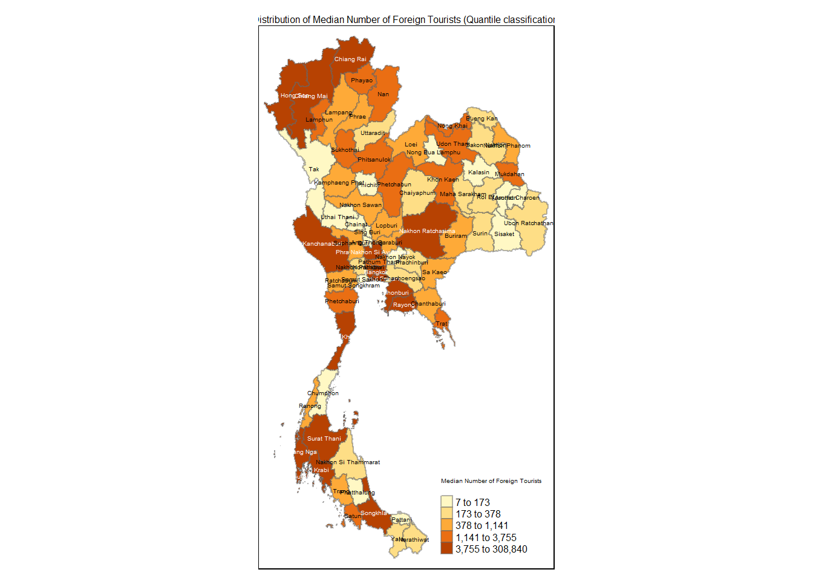

pacman::p_load(sf, sfdep, tmap, tidyverse, knitr, plotly, Kendall, VIM, naniar, DT)Take-home Exercise 2
Take-home Exercise 2: Discovering impacts of COVID-19 on Thailand tourism economy at the province level using spatial and spatio-temporal statistics
1. Setting the Scene
Tourism is one of Thailand’s largest industries, accounting for ~20% of the gross domestic product (GDP). In 2019, Thailand earned US$90 billion from domestic and international tourism, but the COVID-19 pandemic caused revenues to crash to US$24 billion in 2020.
The figure below shows the total revenue receipt from tourism sector between Jan 2019 to Feb 2023, and indicates that the revenue from tourism industry has been gradually recovering since Sep 2021.

However, it is important to note that the tourism economy of Thailand is not evenly distributed. The figure below reveals that the tourism economy of Thailand in 2019 was mainly focused on five provinces, namely Bangkok, Phuket, Chon Buri, Krabi and Chiang Mai.
2. Objectives
The objectives of this take-home exercise will be to discover:
if the key indicators of tourism economy of Thailand are independent from space and space and time.
If the tourism economy is indeed spatial and spatio-temporal dependent, and if so, where the clusters, outliers and emerging hot spot/cold spot areas are.
3. The Task
The specific tasks of this take-home exercise are as follows:
Using appropriate function of sf and tidyverse, prepare the following geospatial data layer:
a study area layer in sf polygon features. It must be at province level (including Bangkok) of Thailand.
a tourism economy indicators layer within the study area in sf polygon features.
a derived tourism economy indicator layer in spacetime s3 class of sfdep. Keep the time series at month and year levels.
Using the extracted data, perform global spatial autocorrelation analysis using sfdep methods.
Using the extracted data, perform local spatial autocorrelation analysis using sfdep methods.
Using the extracted data, perform emerging hotspot analysis using sfdep methods.
Describe the spatial patterns revealed by the analysis above.
4. Installing and Loading the necessary R packages
We use the following code chunk to install and load the necessary R packages for our analysis:
5. The Data
Two data sets shall be used:
Thailand Domestic Tourism Statistics at Kaggle - version 2 of the data set will be used.
Thailand - Subnational Administrative Boundaries at HDX - the province boundary data set will be used.
5.1 Thailand Domestic Tourism Statistics
5.1.1 Importing the csv file
The code chunk below uses read_csv() of readr package to load the Thailand Domestic Tourism Statistics:
tourism <- read_csv("data/rawdata/thailand_domestic_tourism_2019_2023_ver2.csv")The thai_tourism data has 30,800 rows and 7 variables, namely date, province_thai, province_eng, region_thai, region_eng, variable and value.
5.1.2 Cleaning the data
5.1.2.1 Dropping unwanted variables
We will drop the columns province_thai and region_thai as these variables are in the Thai language which we do not understand and hence will not be helpful for our analysis:
tourism <- tourism[,!names(tourism) %in% c("province_thai","region_thai")]5.1.2.2 Determine the presence of missing data
We determine the presence of missing values using the vis_miss() function of the naniar package:
vis_miss(tourism)From the output above, we note that there are no missing data.
5.1.2.3 Creating new year, month and day variables
From the code chunk below, we note that the date variable in tourism data frame is in the Date vector format:
class(tourism$date)[1] "Date"We form new variables year and month using the lubridate package:
tourism <- tourism %>%
mutate(year_month = ymd(date),
year = year(date),
month = month(date,
label = TRUE,
abbr = TRUE),
.before = 2)5.1.2.4 Determine the distribution of provinces and corresponding regions
We first study the distribution of regions in the data:
ggplot(tourism,
aes(x = fct_reorder(region_eng, region_eng, .fun = length))) +
geom_bar() +
labs(title = "Distribution of domestic tourism statistics across regions", x = "Regions", y = "Count") +
theme(axis.text.x = element_text(angle = 45, hjust = 1))From the output above, we note that there 5 different types of regions represented, notably the western region is not represented in the data.
We take a more detailed look by determining the unique provinces represented in the data and their corresponding regions. This step aims to check for two things:
whether there are any duplicate data entries i.e. entries that are meant to represent the same province but have spelling errors.
whether the regions for the provinces are accurately indicated
tourism_unique <- tourism %>%
select(province_eng,region_eng) %>%
distinct() %>%
arrange(region_eng,province_eng)
tourism_unique# A tibble: 77 × 2
province_eng region_eng
<chr> <chr>
1 Ang Thong central
2 Bangkok central
3 Chainat central
4 Kanchanaburi central
5 Lopburi central
6 Nakhon Pathom central
7 Nonthaburi central
8 Pathum Thani central
9 Phetchaburi central
10 Phra Nakhon Si Ayutthaya central
# ℹ 67 more rowsFrom the output above, we note that all 77 Thailand provinces are represented in the data, and that there are no spelling errors/misrepresented provinces.
However, with reference to the source on provinces in Thailand, we note a few mistakes in the regions indicated for the provinces.
Kanchanaburi, Phetchaburi, Prachuap Khiri Khan and Ratchaburi are stated as being in the central region but actually reside in the west region
Nakhon Nayok is stated as being in the east region but actually resides in the central region
The east_northeast region can actually be renamed as northeast region for clarity and consistency with how detailed the other provinces are labelled
Kamphaeng Phet, Nakhon Sawan, Phetchabun, Phichit, Phitsanulok, Sukhothai and Uthai Thani are stated as being in the north region but actually reside in central region
Tak is stated as being in the north region but actually resides in the west region
Sisaket is stated as being in the south region but actually resides in the northeast region
5.1.2.4.1 Correcting the erroneous regions of provinces
We use the code chunk below to rename the “east_northeast” region to just “northeast” and correct the erroneous regions of the provinces mentioned above:
tourism <- tourism %>%
mutate(region_eng = case_when(
region_eng == "east_northeast" ~ "northeast",
province_eng %in% c("Kanchanaburi", "Phetchaburi", "Prachuap Khiri Khan", "Ratchaburi", "Tak") ~ "west",
province_eng %in% c("Nakhon Nayok","Kamphaeng Phet","Nakhon Sawan","Phetchabun","Phichit","Phitsanulok","Sukhothai","Uthai Thani") ~ "central",
province_eng == "Sisaket" ~ "northeast",
TRUE ~ region_eng
))We check by generating the data table of provinces and their corresponding regions:
tourism_unique <- tourism %>%
select(province_eng,region_eng) %>%
distinct() %>%
arrange(region_eng,province_eng)
datatable(tourism_unique)Re-plotting the distribution of domestic tourism statistics across the regions:
ggplot(tourism,
aes(x = fct_reorder(region_eng, region_eng, .fun = length))) +
geom_bar(fill = "skyblue") +
labs(title = "Distribution of domestic tourism statistics across regions", x = "Regions", y = "Count") +
theme(axis.text.x = element_text(angle = 45, hjust = 1))We note that most of the domestic tourism statistics come from the central region, followed by northeast, south, north, east and finally the west region.
5.1.2.5 Determine the distribution of variables and corresponding values
ggplot(tourism,
aes(x = fct_reorder(variable, variable, .fun = length))) +
geom_bar(fill = "skyblue") +
labs(title = "Distribution of Variable", x = "Variable", y = "Count") +
theme(axis.text.x = element_text(angle = 45, hjust = 1))We note that there are 8 different types of variables:
| S/N | Variable | Definition |
|---|---|---|
| 1 | no_tourist_all | The total number of domestic tourists who visited the province |
| 2 | no_tourist_thai | The number of Thai tourists who visited the province |
| 3 | no_tourist_foreign | The number of foreign tourists who visited the province |
| 4 | no_tourist_stay | The total number of tourists who stay overnight |
| 5 | ratio_tourist_stay | Ratio of tourists that stay overnight |
| 6 | revenue_all | The revenue generated by the tourism industry in the province, in Thai Baht |
| 7 | revenue_foreign | The revenue generated by foreign tourists in the province, in Thai Baht |
| 8 | revenue_thai | The revenue generated by Thai tourists in the province, in Thai Baht |
5.1.2.5.1 pivot_wider() to expand variables as individual columns
We utilise the pivot_wider() function to separate the different variable types as individual columns:
tourism_wider <- tourism %>%
pivot_wider(names_from = variable, values_from = value)5.1.2.5.2 Checking the revenue figures
Based on the definition of the different variable types, we note that “revenue_all” should equal to the sum of “revenue_foreign” and “revenue_thai”. We check through the data using the code chunk below:
revenue_numbers <- tourism_wider %>%
group_by(province_eng,year_month) %>%
summarise(
sum_revenue = sum(revenue_foreign, revenue_thai, na.rm = TRUE),
revenue_all = sum(revenue_all,na.rm = TRUE),
.groups = "drop") %>%
mutate(is_rev_equal = sum_revenue == revenue_all)
revenue_numbers# A tibble: 3,850 × 5
province_eng year_month sum_revenue revenue_all is_rev_equal
<chr> <date> <dbl> <dbl> <lgl>
1 Amnat Charoen 2019-01-01 34510000 34510000 TRUE
2 Amnat Charoen 2019-02-01 32290000 32290000 TRUE
3 Amnat Charoen 2019-03-01 39070000 39070000 TRUE
4 Amnat Charoen 2019-04-01 32040000 32040000 TRUE
5 Amnat Charoen 2019-05-01 30110000 30110000 TRUE
6 Amnat Charoen 2019-06-01 26630000 26630000 TRUE
7 Amnat Charoen 2019-07-01 21680000 21680000 TRUE
8 Amnat Charoen 2019-08-01 17700000 17700000 TRUE
9 Amnat Charoen 2019-09-01 19500000 19500000 TRUE
10 Amnat Charoen 2019-10-01 61440000 61440000 TRUE
# ℹ 3,840 more rowsWe note from the output below that the data entries for revenue match up:
revenue_numbers %>%
filter(!is_rev_equal)# A tibble: 0 × 5
# ℹ 5 variables: province_eng <chr>, year_month <date>, sum_revenue <dbl>,
# revenue_all <dbl>, is_rev_equal <lgl>5.1.2.5.3 Checking the tourist numbers
Similarly, based on the definition of the different variable types, we note that “no_tourist_all” should equal to the sum of “no_tourist_foreign” and “no_tourist_thai”. We check through the data using the code chunk below:
tourism_numbers <- tourism_wider %>%
group_by(province_eng,year_month) %>%
summarise(
sum_tourists = sum(no_tourist_foreign, no_tourist_thai, na.rm = TRUE),
tourists_all = sum(no_tourist_all,na.rm = TRUE),
.groups = "drop") %>%
mutate(is_touristno_equal = sum_tourists == tourists_all)
tourism_numbers# A tibble: 3,850 × 5
province_eng year_month sum_tourists tourists_all is_touristno_equal
<chr> <date> <dbl> <dbl> <lgl>
1 Amnat Charoen 2019-01-01 21790 21790 TRUE
2 Amnat Charoen 2019-02-01 20377 20377 TRUE
3 Amnat Charoen 2019-03-01 24786 24786 TRUE
4 Amnat Charoen 2019-04-01 23792 23792 TRUE
5 Amnat Charoen 2019-05-01 22436 22436 TRUE
6 Amnat Charoen 2019-06-01 19714 19714 TRUE
7 Amnat Charoen 2019-07-01 20517 20517 TRUE
8 Amnat Charoen 2019-08-01 16708 16708 TRUE
9 Amnat Charoen 2019-09-01 18453 18453 TRUE
10 Amnat Charoen 2019-10-01 39242 39242 TRUE
# ℹ 3,840 more rowsWe note from the output below that the data entries for tourist numbers match up:
tourism_numbers %>%
filter(!is_touristno_equal)# A tibble: 0 × 5
# ℹ 5 variables: province_eng <chr>, year_month <date>, sum_tourists <dbl>,
# tourists_all <dbl>, is_touristno_equal <lgl>5.1.2.5.4 Checking the distribution of values of each variable
- Revenue
selected_revenue <- tourism %>%
filter(variable %in% c("revenue_all", "revenue_thai", "revenue_foreign"))
# Calculate summary statistics
summary_stats <- selected_revenue %>%
group_by(variable) %>%
summarise(
Min = min(value),
Q1 = quantile(value, 0.25),
Median = median(value),
Q3 = quantile(value, 0.75),
Max = max(value)
)
ggplot(selected_revenue, aes(x = variable, y = value, fill = variable)) +
geom_boxplot() +
geom_text(data=summary_stats, aes(x = variable,
y = Max + 1000,
label = paste("Min:", Min,
"\nQ1:", Q1,
"\nMedian:", Median,
"\nQ3:", Q3,
"\nMax:", Max)),
position = position_dodge(width = 0.75),
vjust = 0, hjust = 1, size = 2, color = "black") +
labs(title = "Boxplots of Different Revenue Types", x = "Revenue Type", y = "Revenue")+
scale_y_continuous(limits = c(0,12e+10))From the boxplots above, we note that the minimum value for “revenue_foreign” is -$4250, this indicate that there could have been errors in data entry.
- Tourist numbers
selected_tourists <- tourism %>%
filter(variable %in% c("no_tourist_all","no_tourist_thai", "no_tourist_foreign"))
# Calculate summary statistics
summary_stats <- selected_tourists %>%
group_by(variable) %>%
summarise(
Min = min(value),
Q1 = quantile(value, 0.25),
Median = median(value),
Q3 = quantile(value, 0.75),
Max = max(value)
)
ggplot(selected_tourists, aes(x = variable, y = value, fill = variable)) +
geom_boxplot() +
geom_text(data=summary_stats, aes(x = variable,
y = Max + 100000,
label = paste("Min:", Min,
"\nQ1:", Q1,
"\nMedian:", Median,
"\nQ3:", Q3,
"\nMax:", Max)),
position = position_dodge(width = 0.75),
vjust = 0, hjust = 1, size = 2, color = "black") +
labs(title = "Boxplots of Different Tourist Numbers", x = "Tourist Type", y = "Number of Tourists")+
scale_y_continuous(limits = c(0,8e+6))- Occupancy
# Calculate summary statistics
summary_stats <- tourism_wider %>%
summarise(
Min = min(no_tourist_stay),
Q1 = quantile(no_tourist_stay, 0.25),
Median = median(no_tourist_stay),
Q3 = quantile(no_tourist_stay, 0.75),
Max = max(no_tourist_stay)
)
ggplot(tourism_wider, aes(x = "", y = no_tourist_stay)) +
geom_boxplot(fill = "lightblue") +
geom_text(data = summary_stats, aes(x = "", y = Max + 100000,
label = paste("Min:", Min,
"\nQ1:", Q1,
"\nMedian:", Median,
"\nQ3:", Q3,
"\nMax:", Max)),
vjust = 0, size = 2, color = "black") +
labs(title = "Distribution of Number of Hotel Rooms Occupied",
y = "Number of Occupied Hotel Rooms") +
scale_y_continuous(limits = c(0,4e+6))+
theme(axis.title.x = element_blank())5.1.2.5.5 Removing data with negative “revenue_foreign” values
Based on the results above, we clean the tourism data by removing rows with negative “revenue_foreign” values. We also remove the “date” variable to keep the data more tidy for further analysis.
#tourism <- tourism_wider %>%
#filter(revenue_foreign >= 0) %>%
#select(-date)
tourism <- tourism_wider %>%
select(-date)After removing the data, we note that we have 3850 rows remaining.
5.1.2.6 Saving as a new rds file
We save the cleaned data as a new rds file:
tourism_cleaned <- write_rds(tourism,"data/rds/tourism_cleaned.rds")tourism_cleaned <- read_rds("data/rds/tourism_cleaned.rds")5.1.3 Creating a data frame for spatial analysis
tourism_cleaned_spat <- tourism_cleaned %>%
group_by(province_eng, region_eng) %>%
summarize(median_tot_revenue = median(revenue_all, na.rm = TRUE),
median_foreign_revenue = median(revenue_foreign, na.rm = TRUE),
median_thai_revenue = median(revenue_thai, na.rm = TRUE),
median_tot_tourist = median(no_tourist_all, na.rm = TRUE),
median_tot_foreign = median(no_tourist_foreign, na.rm = TRUE),
median_tot_thai = median(no_tourist_thai, na.rm = TRUE),
median_occup_rate = median(ratio_tourist_stay, na.rm = TRUE),
median_occup_no = median(no_tourist_stay, na.rm = TRUE),
.groups = 'drop')5.1.3.1 Saving as a new rds file
We save the file as a new rds file:
tourism_cleaned_spat <- write_rds(tourism_cleaned_spat,"data/rds/tourism_cleaned_spat.rds")tourism_cleaned_spat <- read_rds("data/rds/tourism_cleaned_spat.rds")5.1.4 Creating a data frame for temporal analysis
We plot the total revenue by year_month:
tourism_cleaned_summary <- tourism_cleaned %>%
mutate(year_month = as.character(year_month)) %>%
group_by(year_month) %>%
summarize(total_revenue = sum(revenue_all, na.rm = TRUE))
ggplot(tourism_cleaned_summary, aes(x = year_month, y = total_revenue)) +
geom_bar(stat = "identity", fill = "skyblue") +
labs(title = "Total Revenue by Year-Month", x = "Year-Month", y = "Total Revenue") +
theme_minimal() +
theme(axis.text.x = element_text(angle = 45, hjust = 1))Based on the distribution of total revenue across the year_month variable, it can be seen that temporally, we can split the data into 3 time periods, namely:
pre-COVID: Between Jan 2019 to Mar 2020
during COVID: Between Apr 2020 to Aug 2021
post-COVID: Between Sep 2021 to Feb 2023
tourism_cleaned_temp <- tourism_cleaned %>%
mutate(time_period = case_when(
year_month >= "2019-01-01" & year_month <= "2020-03-01" ~ "Pre-COVID",
year_month >= "2020-04-01" & year_month <= "2021-08-01" ~ "During-COVID",
year_month >= "2021-09-01" & year_month <= "2023-02-01" ~ "Post-COVID",
TRUE ~ NA_character_))tourism_cleaned_temp <- tourism_cleaned_temp %>%
group_by(province_eng,time_period) %>%
summarize(median_tot_revenue = median(revenue_all, na.rm = TRUE),
median_foreign_revenue = median(revenue_foreign, na.rm = TRUE),
median_thai_revenue = median(revenue_thai, na.rm = TRUE),
median_tot_tourist = median(no_tourist_all, na.rm = TRUE),
median_tot_foreign = median(no_tourist_foreign, na.rm = TRUE),
median_tot_thai = median(no_tourist_thai, na.rm = TRUE),
median_occup_rate = median(ratio_tourist_stay, na.rm = TRUE),
median_occup_no = median(no_tourist_stay, na.rm = TRUE),
.groups = 'drop')5.1.3.1 Saving as a new rds file
We save the file as a new rds file:
tourism_cleaned_temp <- write_rds(tourism_cleaned_temp,"data/rds/tourism_cleaned_temp.rds")tourism_cleaned_temp <- read_rds("data/rds/tourism_cleaned_temp.rds")5.2 Thailand Subnational Administrative Boundaries
5.2.1 Importing the shapefile
The code chunk below uses st_read() of sf package to import the Thailand Subnational Administrative Boundaries shapefile into R. There are a few different files representing different levels of administrative boundaries - level 0 (country), level 1 (province), level 2 (district) and level 3 (sub-district, tambon). As we are only interested in province level administrative boundaries, we will just load the file corresponding to level 1.
The imported shapefile will be a simple features object of sf.
province <- st_read(dsn = "data/rawdata",
layer = "tha_admbnda_adm1_rtsd_20220121")We note that the simple features data has a multipolygon geometry and has 77 features and 16 fields. It is in WGS84 geographic coordinate system.
5.2.2 Removing the unwanted variables
Of the fields available, only “ADM1_EN” and “geometry” are essential hence the following code chunk keeps only these two variables in the simple features object:
province <- province %>%
select(ADM1_EN)5.2.3 Checking the name of the provinces
As we will be joining the province simple features object and the attribute data from tourism_cleaned using the province names (ADM1_EN in province simple features object and province_eng in tourism_cleaned dataframe), it is important to check through the naming of the provinces to ensure that they all match up.
We extract the unique province names from both tourism_cleaned and province:
unique_tour_prov <- tourism_cleaned %>%
distinct(province_eng)unique_shp_prov <- province %>%
distinct(ADM1_EN)We then combine via a full join and read through the list of province names for discrepancies:
combined_prov <- full_join(unique_shp_prov,unique_tour_prov,
by = c("ADM1_EN"="province_eng"))combined_prov <- combined_prov %>%
arrange(ADM1_EN)
combined_prov ADM1_EN
1 Amnat Charoen
2 Ang Thong
3 Bangkok
4 Bueng Kan
5 Buri Ram
6 Buriram
7 Chachoengsao
8 Chai Nat
9 Chainat
10 Chaiyaphum
11 Chanthaburi
12 Chiang Mai
13 Chiang Rai
14 Chon Buri
15 Chonburi
16 Chumphon
17 Kalasin
18 Kamphaeng Phet
19 Kanchanaburi
20 Khon Kaen
21 Krabi
22 Lampang
23 Lamphun
24 Loei
25 Lop Buri
26 Lopburi
27 Mae Hong Son
28 Maha Sarakham
29 Mukdahan
30 Nakhon Nayok
31 Nakhon Pathom
32 Nakhon Phanom
33 Nakhon Ratchasima
34 Nakhon Sawan
35 Nakhon Si Thammarat
36 Nan
37 Narathiwat
38 Nong Bua Lam Phu
39 Nong Bua Lamphu
40 Nong Khai
41 Nonthaburi
42 Pathum Thani
43 Pattani
44 Phang Nga
45 Phangnga
46 Phatthalung
47 Phayao
48 Phetchabun
49 Phetchaburi
50 Phichit
51 Phitsanulok
52 Phra Nakhon Si Ayutthaya
53 Phrae
54 Phuket
55 Prachin Buri
56 Prachinburi
57 Prachuap Khiri Khan
58 Ranong
59 Ratchaburi
60 Rayong
61 Roi Et
62 Sa Kaeo
63 Sakon Nakhon
64 Samut Prakan
65 Samut Sakhon
66 Samut Songkhram
67 Saraburi
68 Satun
69 Si Sa Ket
70 Sing Buri
71 Sisaket
72 Songkhla
73 Sukhothai
74 Suphan Buri
75 Surat Thani
76 Surin
77 Tak
78 Trang
79 Trat
80 Ubon Ratchathani
81 Udon Thani
82 Uthai Thani
83 Uttaradit
84 Yala
85 YasothonWe note repeated entries for eight provinces which are spelt differently in the original province sf object vs tourism_cleaned dataframe:
Buri Ram vs Buriram
Chai Nat vs Chainat
Chon Buri vs Chonburi
Lop Buri vs Lopburi
Nong Bua Lam Phu vs Nong Bua Lamphu
Phangnga vs Phang Nga
Prachin Buri vs Prachinburi
Si Sa Ket vs Sisaket
5.2.3.1 Adjusting the naming of provinces in province sf object
We utilise the following code chunk to adjust the naming of the eight provinces to be aligned with the naming in the tourism_cleaned dataframe to faciliate relational join in subsequent analysis. We also rename “ADM1_EN” to “province_eng” to faciliate the creation of timeseries cube in subsequent analysis.
province <- province %>%
mutate(ADM1_EN = case_when(
ADM1_EN == "Buri Ram" ~ "Buriram",
ADM1_EN == "Chai Nat" ~ "Chainat",
ADM1_EN == "Chon Buri" ~ "Chonburi",
ADM1_EN == "Lop Buri" ~ "Lopburi",
ADM1_EN == "Nong Bua Lam Phu" ~ "Nong Bua Lamphu",
ADM1_EN == "Phangnga" ~ "Phang Nga",
ADM1_EN == "Prachin Buri" ~ "Prachinburi",
ADM1_EN == "Si Sa Ket" ~ "Sisaket",
TRUE ~ ADM1_EN)) %>%
rename(province_eng = ADM1_EN)We save this as new rds file to avoid reloading the original datafile above:
province <- write_rds(province,"data/rds/province.rds")province <- read_rds("data/rds/province.rds")5.3 Performing relational join
5.3.1 Relational join with tourism_cleaned data frame
We then perform a left relational join to update the province sf object with the attribute fields of the tourism_cleaned data frame:
combined_prov_tourism <- left_join(province,tourism_cleaned)glimpse(combined_prov_tourism)Rows: 3,850
Columns: 14
$ province_eng <chr> "Bangkok", "Bangkok", "Bangkok", "Bangkok", "Bangko…
$ year_month <date> 2019-01-01, 2020-01-01, 2021-01-01, 2022-01-01, 20…
$ year <dbl> 2019, 2020, 2021, 2022, 2023, 2019, 2020, 2021, 202…
$ month <ord> Jan, Jan, Jan, Jan, Jan, Feb, Feb, Feb, Feb, Feb, M…
$ region_eng <chr> "central", "central", "central", "central", "centra…
$ ratio_tourist_stay <dbl> 93.37, 89.36, 7.54, 26.34, 75.02, 89.19, 68.37, 9.9…
$ no_tourist_stay <dbl> 3334971, 3213765, 354676, 1009583, 2440463, 3025538…
$ no_tourist_all <dbl> 5959075, 6046765, 1681847, 2437497, 4872078, 521140…
$ no_tourist_thai <dbl> 3534061, 3573040, 1632693, 2299906, 2749877, 291992…
$ no_tourist_foreign <dbl> 2425014, 2473725, 49154, 137591, 2122201, 2291482, …
$ revenue_all <dbl> 81926490000, 88202890000, 9539730000, 11823610000, …
$ revenue_thai <dbl> 29742580000, 31137650000, 8447450000, 9642600000, 1…
$ revenue_foreign <dbl> 52183910000, 57065240000, 1092280000, 2181010000, 4…
$ geometry <MULTIPOLYGON [°]> MULTIPOLYGON (((100.6139 13..., MULTIP…We note that the combined_prov_tourism data has the same number of rows, 3848 rows, as the original tourism_cleaned data frame indicating that the cleaning up of the different province spellings was done accurately.
5.3.1.1 Saving as a new rds file
We save the combined file as a new rds file and load it into the R environment for further analysis:
combined_data <- write_rds(combined_prov_tourism,"data/rds/combined_prov_tourism.rds")combined_data <- read_rds("data/rds/combined_prov_tourism.rds")5.3.2 Relational join with tourism_cleaned_spat data frame
We also perform a left relational join to update the province sf object with the attribute fields of the tourism_cleaned_spat data frame:
combined_tourism_spat <- left_join(province,tourism_cleaned_spat)glimpse(combined_tourism_spat)Rows: 77
Columns: 11
$ province_eng <chr> "Bangkok", "Samut Prakan", "Nonthaburi", "Pathu…
$ region_eng <chr> "central", "central", "central", "central", "ce…
$ median_tot_revenue <dbl> 16554390000, 228515000, 216067500, 135655000, 8…
$ median_foreign_revenue <dbl> 8025340000, 26780000, 4880000, 1740000, 1550500…
$ median_thai_revenue <dbl> 11973495000, 194440000, 214815000, 129105000, 7…
$ median_tot_tourist <dbl> 2681686.0, 149277.0, 161057.5, 100804.0, 557916…
$ median_tot_foreign <dbl> 308839.5, 19441.5, 2029.0, 1166.5, 8347.5, 7.0,…
$ median_tot_thai <dbl> 2309799.5, 127042.5, 157859.5, 98375.5, 495576.…
$ median_occup_rate <dbl> 35.355, 28.300, 37.590, 25.980, 48.660, 28.995,…
$ median_occup_no <dbl> 1151894.5, 47140.5, 54486.0, 23215.0, 68597.0, …
$ geometry <MULTIPOLYGON [°]> MULTIPOLYGON (((100.6139 13..., MU…5.3.2.1 Saving as a new rds file
We save the combined file as a new rds file and load it into the R environment for further analysis:
combined_data_spat <- write_rds(combined_tourism_spat,"data/rds/combined_data_spat.rds")combined_data_spat <- read_rds("data/rds/combined_data_spat.rds")5.3.3 Relational join with tourism_cleaned_temp data frame
We also perform a left relational join to update the province sf object with the attribute fields of the tourism_cleaned_temp data frame:
combined_tourism_temp <- left_join(province,tourism_cleaned_temp)glimpse(combined_tourism_temp)Rows: 231
Columns: 11
$ province_eng <chr> "Bangkok", "Bangkok", "Bangkok", "Samut Prakan"…
$ time_period <chr> "During-COVID", "Post-COVID", "Pre-COVID", "Dur…
$ median_tot_revenue <dbl> 9539730000, 22927845000, 87753820000, 64680000,…
$ median_foreign_revenue <dbl> 1152230000, 11714170000, 54153040000, 50000, 46…
$ median_thai_revenue <dbl> 8348660000, 11762345000, 29052570000, 64680000,…
$ median_tot_tourist <dbl> 1115611.0, 2879758.0, 5620260.0, 51035.0, 16007…
$ median_tot_foreign <dbl> 53676.0, 613626.0, 2087831.0, 61.0, 36441.0, 83…
$ median_tot_thai <dbl> 1063854.0, 2363948.0, 3534061.0, 51035.0, 12833…
$ median_occup_rate <dbl> 11.270, 41.065, 79.440, 7.740, 29.115, 57.790, …
$ median_occup_no <dbl> 476161.0, 1246119.5, 3008999.0, 9972.0, 47503.5…
$ geometry <MULTIPOLYGON [°]> MULTIPOLYGON (((100.6139 13..., MU…5.3.3.1 Saving as a new rds file
We save the combined file as a new rds file and load it into the R environment for further analysis:
combined_data_temp <- write_rds(combined_tourism_temp,"data/rds/combined_data_temp.rds")combined_data_temp <- read_rds("data/rds/combined_data_temp.rds")5.4 Creating a time series cube
We use spacetime() of sfdep to create a spatio-temporal cube:
spt <- spacetime(
tourism_cleaned,
province,
.loc_col = "province_eng",
.time_col = "year_month"
)5.4.1 Verifying space-time cube object
We utilise the following code chunk to verify if spt is indeed a space-time cube object:
is_spacetime_cube(spt)[1] TRUE5.4.2 Saving as a new rds file
We save spt as a new rds file and load it into the R environment for further analysis:
spt <- write_rds(spt,"data/rds/spt.rds")spt <- read_rds("data/rds/spt.rds")6. Key Indicators of the Tourism Economy of Thailand
From the above data, we note that there are several possible key indicators of the tourism economy of Thailand to analyse, namely: (i) Total revenue, (ii) Revenue generated from foreign tourists, (iii) Revenue generated from local/Thai tourists, (iv) Total number of tourists, (v) Number of foreign tourists, (vi) Number of local/Thai tourists and (vii) Rate of tourists who stay overnight. For our analysis, we will focus on the following indicators for reasons stated below:
(i) Total revenue: Revenue generated from both foreign and local tourists can indicate how well Thai’s tourism economy is performing.
(ii) Number of foreign tourists: Based on literature, Thailand recorded a total THB1.9 trillion receipts from foreign tourists (65% of the sector’s receipts) or 11.5% of its GDP in 2019. The daily foreign tourist spending was around $192 per person, more than double of domestic tourists spending. The number of foreign tourists will hence be a strong indicator of how well the Thai tourism economy is performing i.e. the greater number of tourists, coupled with their higher propensity to spend, would be indicative of a booming tourism economy.
(iii) Rate of tourists who stay overnight: A higher rate of tourists who stay overnight can be indicative of how well the tourism economy is performing as tourists who stay for longer periods in Thailand are likely to incur more expenditure i.e. via spending on accommodation, more activities.
6.1 Visualising Indicators of Tourism Economy
tmap_mode("plot")
tm_shape(combined_data_spat)+
tm_fill("median_tot_revenue",
n = 5,
style = "quantile")+
tm_borders(alpha = 0.5)+
tm_layout(main.title = "Distribution of Median Total Revenue (Quantile classification)",main.title.size = 0.5,
legend.text.size = 1,
legend.outside.size = 1)+
tm_text("province_eng",size = 0.3)
tmap_mode("plot")
tm_shape(combined_data_spat)+
tm_fill("median_tot_foreign",
n = 5,
style = "quantile")+
tm_borders(alpha = 0.5)+
tm_layout(main.title = "Distribution of Median Total Foreign Tourists (Quantile classification)",main.title.size = 0.5,
legend.text.size = 1,
legend.outside.size = 1)+
tm_text("province_eng",size = 0.3)tmap_mode("plot")
tm_shape(combined_data_spat)+
tm_fill("median_occup_rate",
n = 5,
style = "quantile")+
tm_borders(alpha = 0.5)+
tm_layout(main.title = "Distribution of Median Rate of Overnights Tourists (Quantile classification)",main.title.size = 0.5,
legend.text.size = 1,
legend.outside.size = 1)+
tm_text("province_eng",size = 0.3)
7. Generating centroids
A connectivity graph takes a point and displays a line to each neighbouring point. As we are working with multipolygons, we will need to get points to make connectivity graphs. As such, we will need to create centroids for each province.
centroids <- combined_data_spat %>%
st_centroid() %>%
select(province_eng, geometry)7.1 Saving as a new rds file
We save centroids as a new rds file and load it into the R environment for further analysis:
centroids <- write_rds(centroids,"data/rds/centroids.rds")centroids <- read_rds("data/rds/centroids.rds")7.2 Visualising the centroids
We visualise where these centroids are:
tmap_mode('plot')
tm_shape(province) +
tm_fill()+
tm_borders()+
tm_shape(centroids)+
tm_dots(col = "darkblue", size = 0.2, alpha = 0.5, title = "Centroids") +
tm_text("province_eng", size = 0.5, col = "black") +
tm_layout(main.title = "Centroids of Provinces", main.title.size = 0.5) We note that none of the centroids generated are in the water and are all located within the regions of provinces.